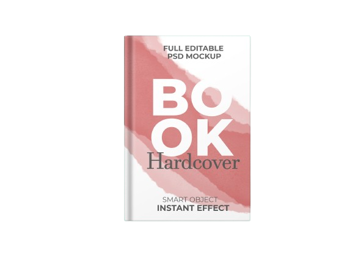

The Martian
Science Fiction
The Martian is a 2011 science fiction novel written by Andy Weir. It was his debut novel under his own name, and
originally self-published in 2011. Crown Publishing purchased the rights and re-released it in 2014. The story
follows an American astronaut, Mark Watney, as he becomes stranded alone on Mars in the year 2035 and must
improvise in order to survive. The Martian, a film adaptation ...